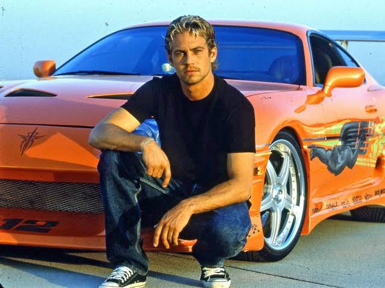
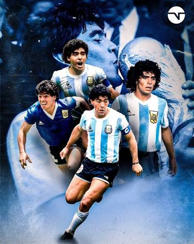
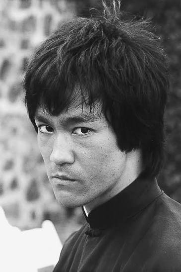

Paul William Walker IV
Group 1 · Read and listen
Vicente Fernández
Group 1 · Read and listen

Diego Armando Maradona
Read and listen

Bruce Lee
Read and listen
Paul William Walker
Group 2 · Read and listen
Vicente Fernández
Group 2 · Read and listen
Texts & Pronunciation
Paul William Walker IV
He was an American actor and philanthropist. He was born on September 12, 1973, in Glendale, California, USA. He was famous for playing Brian O'Conner in the Fast and Furious movies. He acted and modeled in the Fast and Furious movies. He died on November 30, 2013, in Santa Clarita, California, USA.
Integrantes: Luis, Josefina, Francisca, Sofia, Alison.
Vicente Fernandez
He was a famous singer. He was born on February 17, 1940, in Huentitan, El Alto, Jalisco. He was famous for his music and movies. He recorded songs and acted in movies. He died in Guadalajara, Jalisco, Mexico, on December 12, 2021.
Integrantes: Mya, Daritza, Katalina, Maite.
Diego Armando Maradona
Diego Armando Maradona was a famous ex-football player. He was born on October 30, 1960, in Buenos Aires, Argentina. He was famous because he was a professional football player. He played football. Diego Armando Maradona died on November 25, 2020, in Tigre, Buenos Aires, Argentina.
Integrantes: Dyland I, Julian C, Danilo, Benjamin, Nicolás.
Bruce Lee
He was born on November 27th, 1940, San Francisco California. He acted in The Big Boss and Fist of Fury. He practiced Wing Chun and Jeet Kune Do. He died in Kowloon, Hong Kong on July 20th 1973.
Integrantes: Diego, Paulo, Matias Venenciano, José, Cristián.
Paul William Walker
Paul William was an actor. He was born on July 12, 1978 in Glendale California. He was famous for his movies Fast and Furious. Paul Walker acted in Fast and Furious. He died on November 30, 2013, in Santa Clarita, California.
Integrantes: Carlos, Edison, Julián F, Dylan.
Vicente Fernández
Vicente Fernandez was a famous singer and actor. He was born on February 17, 1940, Huentitan, El Alto. He was famous for his music. He recorded music. He died on December 2021 in Guadalajara, Jalisco.
Integrante: Daniel.